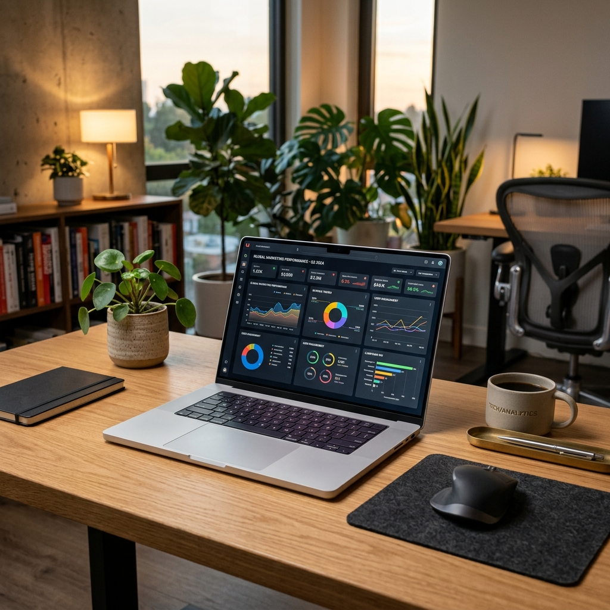

QA/AI is an AI-powered system designed to automate visual graphics, quality control, and data verification for large-scale operations. The platform consolidates diverse datasets and delivers 100% real-time client health and task transparency.
Legacy QA pipelines relied heavily on manual spot checks, creating severe bottlenecks, long verification loops, and a lack of unified client dashboards.
Managers and QA teams couldn't visually trace error patterns, track workload in real time, or proactively manage SLA compliance.
Discovering how automating repetitive checks and visual audits frees up human talent to focus on high-impact strategic improvements.
Deep-diving into legacy pipeline roadblocks and manual spot-checking inefficiencies.
Standardizing UI badge guidelines, color systems, and density blueprints.
Integrating automated visual models into core production branches.
QA/AI is built upon a standardized design system that ensures consistency, high rendering speeds, and seamless component updates.
Conducted workshops with 10 design system engineers and developers to test components.
Performance metrics tracked: Component render times, library load speeds, and consistency across platforms. High rendering speeds were key.
| Category | Verified | Rate |
|---|---|---|
| Visual Layouts | Pass | 100% |
| Data Streams | Pass | 99.98% |
Badges designed to convey system statuses dynamically and clearly, using predefined state tokens.
| Category | Loop | Speed |
|---|---|---|
| CRM Database | Pass | 12ms |
| Visual Assets | Pass | 18ms |
Empowered by a high density visual grid which manages complex data loads without introducing screen lag.
Designed a comprehensive analytics dashboard that integrates data from active repositories.
A completely integrated tracking framework which manages metrics and loops instantly across target servers.
Automating manual audits and visual checks led to an immediate reduction in test times.
Introduced immediate status tracking, providing total transparency for operational stakeholders.
Automated tracking alert parameters led to a massive boost in SLA compliance metrics.
Eliminated repetitive inspection tasks, freeing up QA specialists for strategic activities.

"QA/AI automated critical quality assurance pipelines, successfully reducing visual inspection workloads by 70% and achieving 100% verification accuracy across all client platforms."